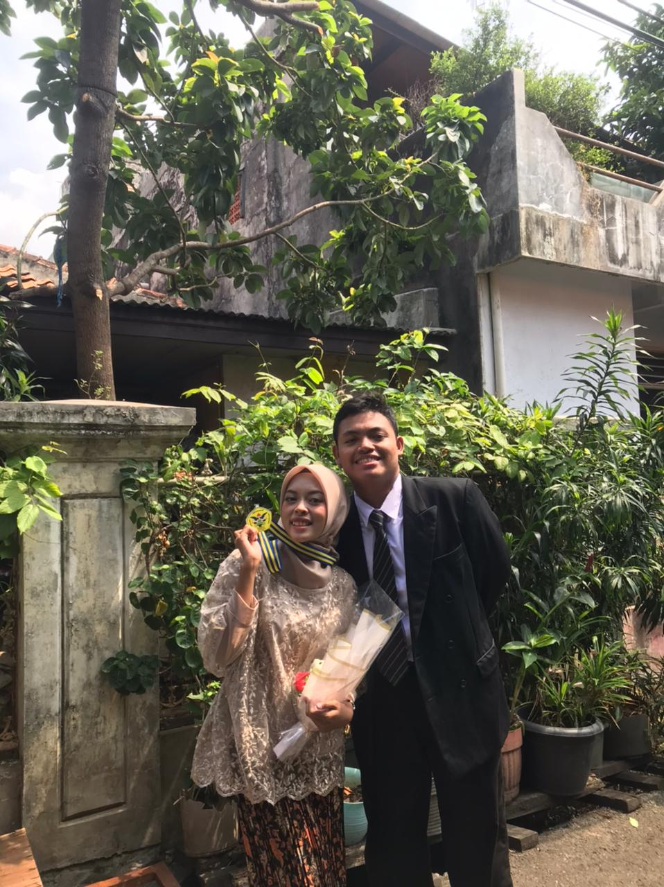
06 Mei 2026
Happy Birthday
Sayangku!
Hari ini dunia wajib ikut senang, karena orang paling lucu, paling cantik, dan paling bikin aku kangen sedang ulang tahun.
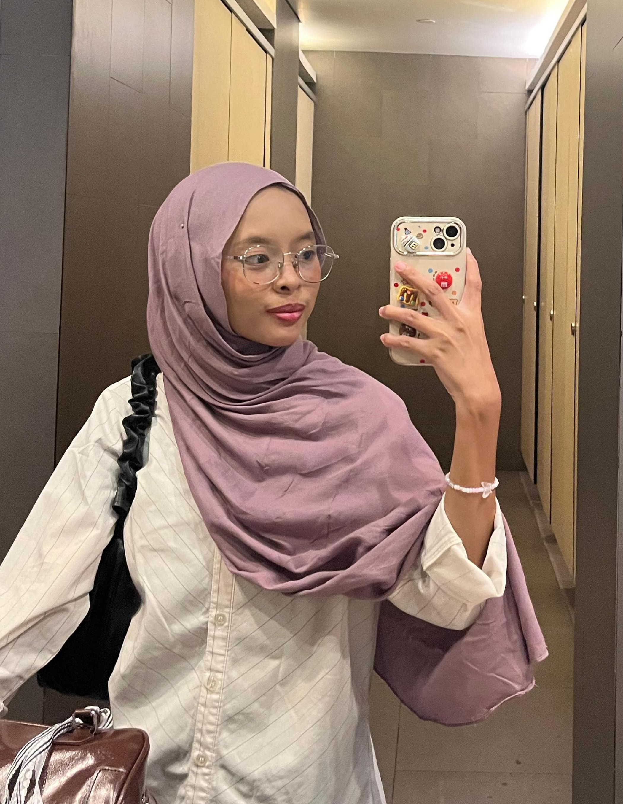
Lucuu
Baik
Tanggal Spesial
6 Mei 2006
Tanggal ini bukan sekadar angka. Hari ini tiba-tiba jadi lebih indah, lebih cerah karena kamu lahir. Sejak itu, aku jadi lebih ceria, semangat, dan kehidupan aku jadi berwarna. So, Thank You Dear...
Mood Hari Ini
Seru, Lucu, dan Asik
Website ini aku bikin khusus buat nemenin hari ulang tahunmu. Biar tiap scroll rasanya kayak lagi jalan bareng aku. kadang ketawa sampai sakit perut, kadang random ngomong hal nggak jelas, tapi selalu bikin hati kangen...
Pesan Singkat
Haloo Ndutt...
Kalau lagi capek, kamu cerita yaa sama akuu. Jangan di pendem sendiri yaa sayang... aku siap jadi pendengar cerita kamu... Kalau lagi senang, aku mau jadi bagian dari senyum kamuu...
Kumpulan Album
Galeri Foto
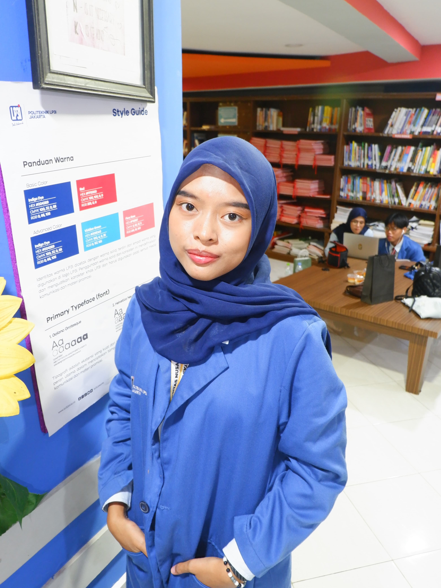
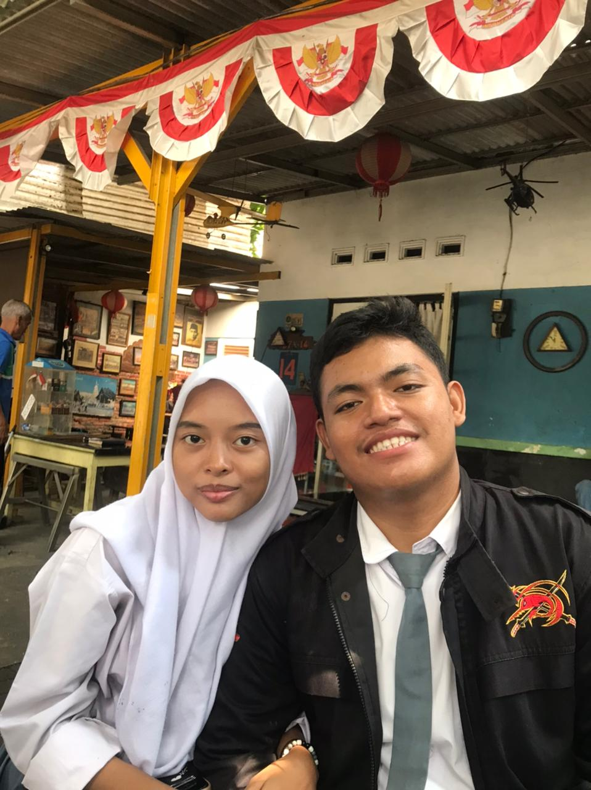
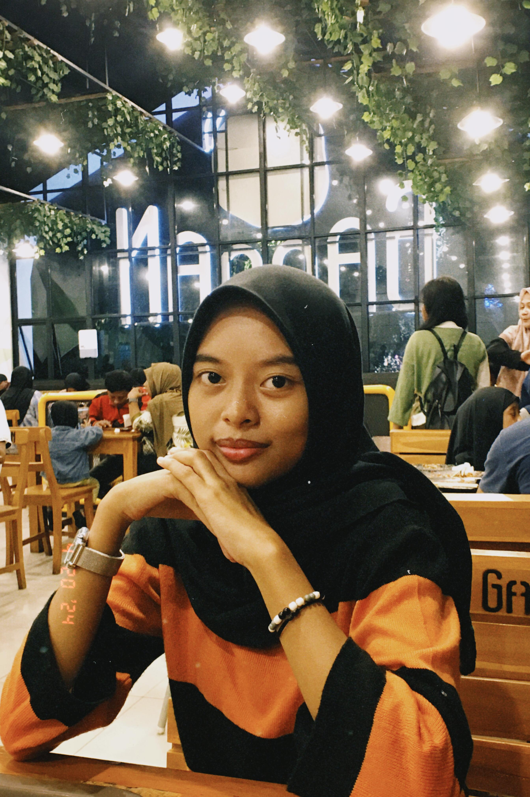
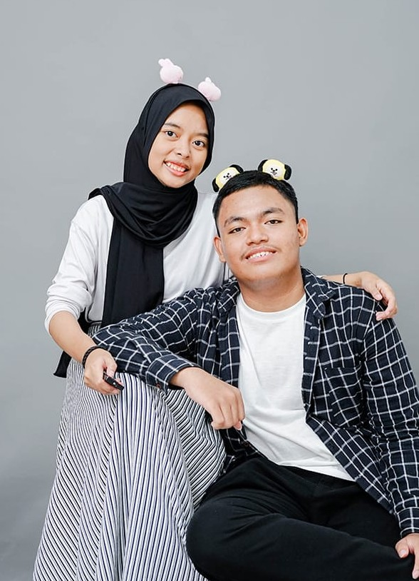
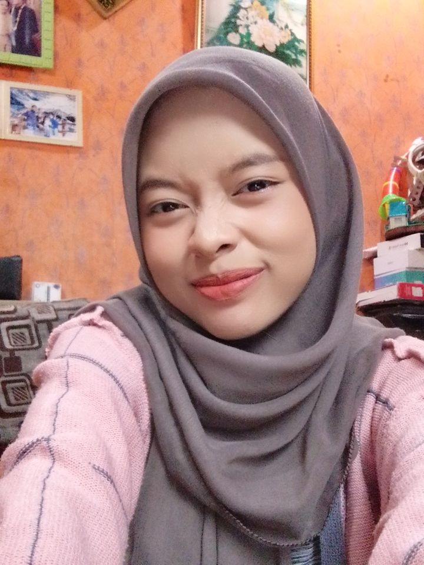
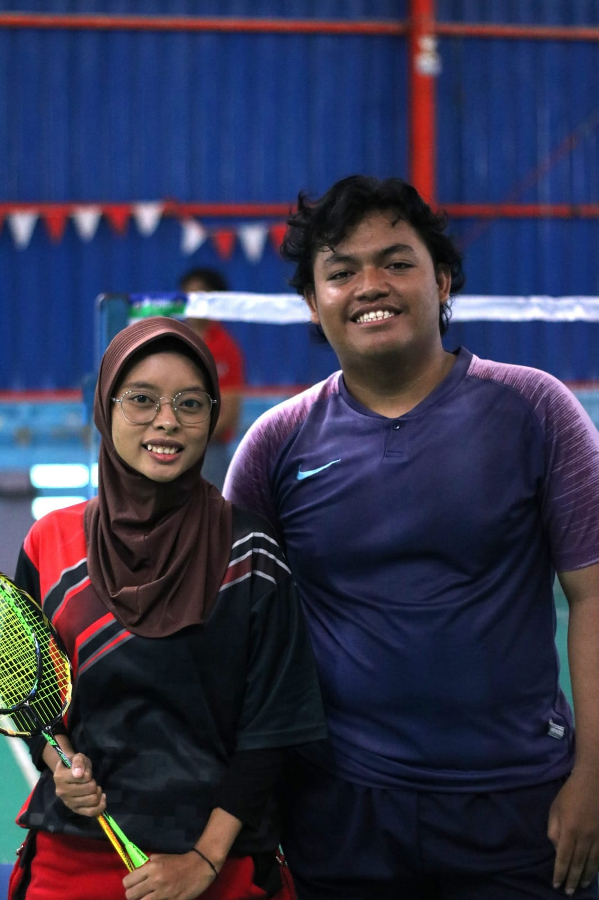
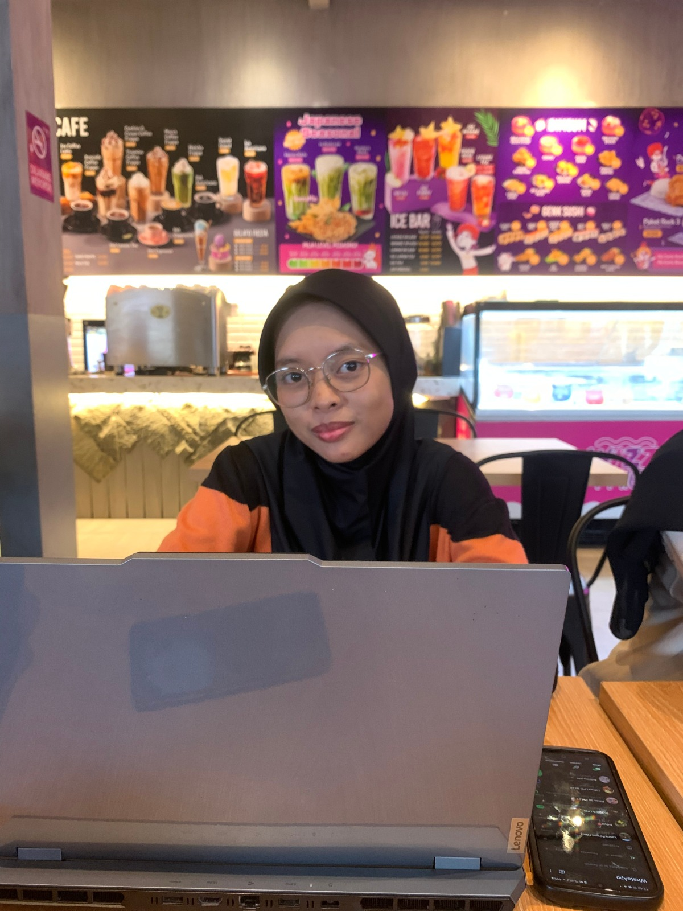
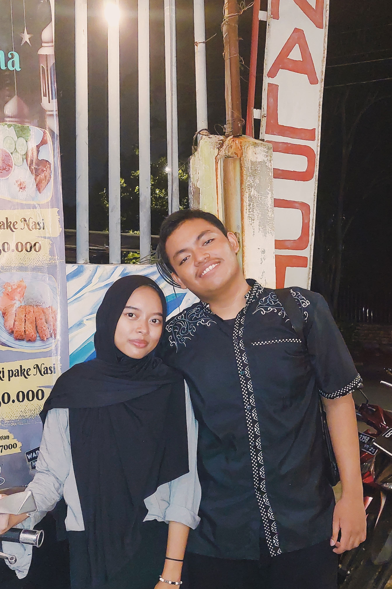
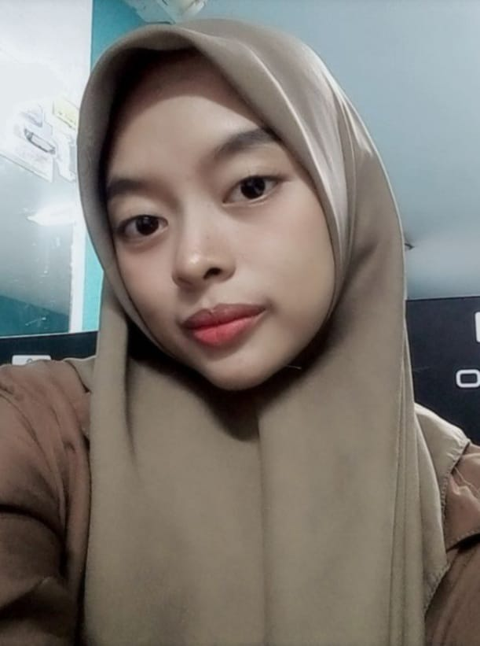
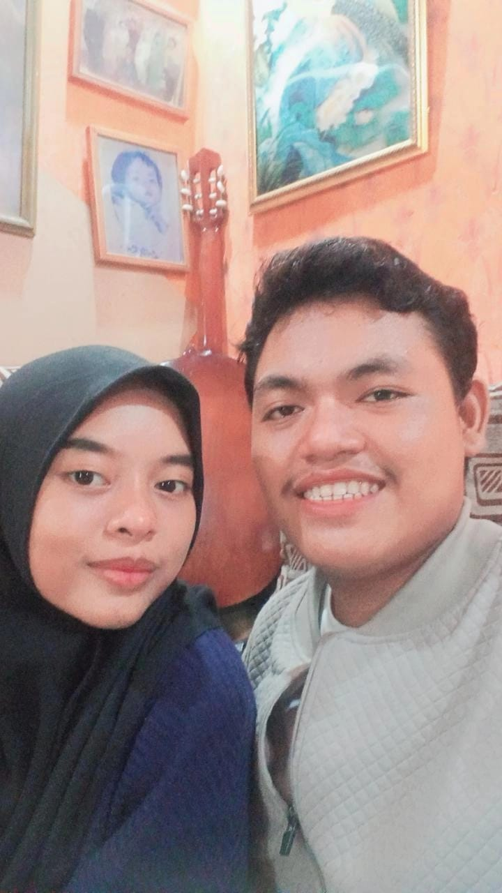
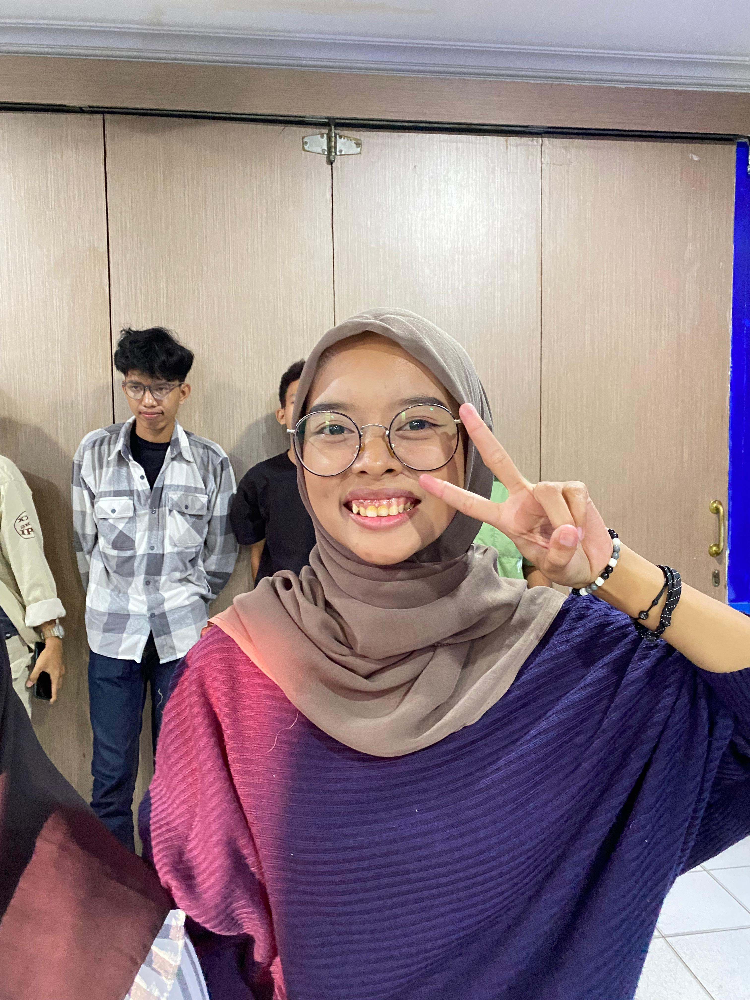
Surat Mini
Ucapan Buat Kamu
Mini Games
Zona Interaktif Spesial
Seberapa sayang kamu?
Ayo jawab jujur, kamu sayang nggak sama aku? 🥺
Tombol Meledak Cinta
Klik tombol ini kalau kamu mau nyebarin banyak cinta! 🎈💕
Pesan Rahasia
Mau lihat pesan rahasia atau gombalan lucu yang cuma boleh dibaca sama kamu?